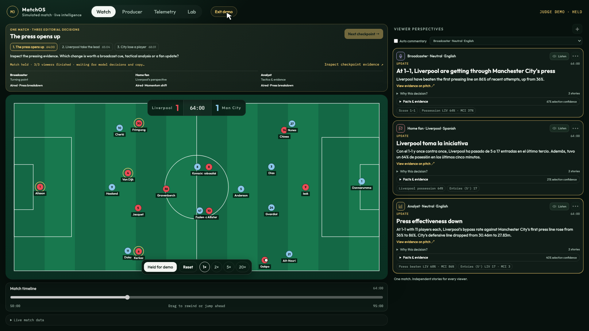

<template>
  <div data-hf-id="hf-j5x1" id="beat-8" class="film-scene" data-composition-id="beat-8" data-start="0" data-duration="14.45" data-width="1920" data-height="1080">
    <div data-hf-id="hf-d7wu" id="b8-pitch" class="pitch-decor" data-layout-ignore></div>

    <section data-hf-id="hf-7ovb" id="b8-roadmap" class="scene-content">
      <header data-hf-id="hf-wf7g" class="brand-row">
        <div data-hf-id="hf-v0rz" id="b8-brand"></div>
        <div data-hf-id="hf-nz2v" id="b8-status" class="eyebrow">Future roadmap</div>
      </header>

      <main data-hf-id="hf-gsmy" id="b8-roadmap-main">
        <div data-hf-id="hf-humq" id="b8-roadmap-copy">
          <div data-hf-id="hf-0wuo" id="b8-heading-group">
            <div data-hf-id="hf-7nxc" id="b8-next" class="eyebrow">NEXT</div>
            <h1 data-hf-id="hf-cg1p" id="b8-title">More ways into the match.</h1>
          </div>
          <ol data-hf-id="hf-lrra" id="b8-list">
            <li data-hf-id="hf-w385" id="b8-feed-row">
              <span data-hf-id="hf-f3o8" class="b8-step mono">01</span>
              <div data-hf-id="hf-yeow"><h2 data-hf-id="hf-kjg5">Licensed live feeds</h2><p data-hf-id="hf-5rb6">Future data integration</p></div>
            </li>
            <li data-hf-id="hf-tu2u" id="b8-player-row">
              <span data-hf-id="hf-dwr5" class="b8-step mono">02</span>
              <div data-hf-id="hf-y7yw"><h2 data-hf-id="hf-kx42">Deeper player perspectives</h2><p data-hf-id="hf-14fh">Individual player stories</p></div>
            </li>
            <li data-hf-id="hf-v5wa" id="b8-state-row">
              <span data-hf-id="hf-eb26" class="b8-step mono">03</span>
              <div data-hf-id="hf-x11t"><h2 data-hf-id="hf-32oq">Shared match state</h2><p data-hf-id="hf-6sc9">Reconnect + horizontal scale</p></div>
            </li>
          </ol>
        </div>

        <div data-hf-id="hf-kbl9" id="b8-screen-enter">
          <div data-hf-id="hf-1bbb" id="b8-future-path">
            <div data-hf-id="hf-h9e6" id="b8-path-label" class="mono">FUTURE FEED PATH</div>
            <div data-hf-id="hf-hoz5" id="b8-path-rail" aria-hidden="true">
              <span data-hf-id="hf-sese" id="b8-path-source"></span><span data-hf-id="hf-8jbj" id="b8-path-line"></span><span data-hf-id="hf-ktzu" id="b8-path-arrow">→</span>
            </div>
            <div data-hf-id="hf-wk6j" id="b8-path-destination" class="mono">MATCHOS</div>
          </div>
          <div data-hf-id="hf-1ujb" id="b8-screen-ambient">
            <div data-hf-id="hf-m161" id="b8-screen" class="screen-frame">
              <div data-hf-id="hf-bkgu" id="b8-screen-top"><span data-hf-id="hf-db81">Actual app today</span><span data-hf-id="hf-5lng">64:00</span></div>
              
            </div>
          </div>
          <p data-hf-id="hf-0ckz" id="b8-capture-caption">Simulated match · actual app capture</p>
        </div>
      </main>
      <footer data-hf-id="hf-isxf" id="b8-roadmap-note" class="footnote">Roadmap concepts · not shipped functionality</footer>
    </section>

    <section data-hf-id="hf-d1xa" id="b8-closing" class="scene-content">
      <header data-hf-id="hf-ijr7" id="b8-close-header" class="brand-row">
        
        <div data-hf-id="hf-h5wm" id="b8-close-label" class="eyebrow">MatchOS</div>
      </header>
      <div data-hf-id="hf-5rkh" id="b8-close-body">
        <div data-hf-id="hf-11l3" id="b8-close-rule"></div>
        <h2 data-hf-id="hf-jopf" id="b8-tagline"><span data-hf-id="hf-sjye" id="b8-one-match">One match.</span><span data-hf-id="hf-iysk" id="b8-perspective">Every perspective.</span></h2>
        <p data-hf-id="hf-q017" id="b8-evidence-line">A useful story, grounded in evidence.</p>
      </div>
      <footer data-hf-id="hf-ri4q" id="b8-close-footer"><span data-hf-id="hf-8z6a" class="mono">SHARED EVIDENCE</span><span data-hf-id="hf-nzbv" id="b8-footer-line"></span><span data-hf-id="hf-irjb" class="mono">INDEPENDENT STORIES</span></footer>
    </section>

    <style>
      #beat-8{display:grid}
      #beat-8 .scene-content{grid-area:1 / 1;width:100%;height:100%;padding:60px 76px 66px;display:flex;flex-direction:column;gap:34px;box-sizing:border-box}
      #beat-8 .brand-row{min-height:64px}
      #beat-8 #b8-brand img{display:block;width:325px;height:60px;object-fit:contain;object-position:left center}
      #beat-8 #b8-roadmap-main{display:flex;gap:70px;align-items:center;flex:1;min-height:0}
      #beat-8 #b8-roadmap-copy{width:830px;flex-shrink:0;display:flex;flex-direction:column;gap:42px}
      #beat-8 #b8-heading-group{display:flex;flex-direction:column;gap:16px}
      #beat-8 #b8-next{font-size:25px;letter-spacing:.14em}
      #beat-8 #b8-title{font-size:75px;line-height:1.05;letter-spacing:-.035em;font-weight:800;max-width:780px;margin:0}
      #beat-8 #b8-list{display:flex;flex-direction:column;gap:29px;list-style:none;margin:0;padding:0}
      #beat-8 #b8-list li{display:flex;gap:23px;align-items:flex-start}
      #beat-8 .b8-step{display:flex;align-items:center;justify-content:center;flex-shrink:0;width:55px;height:55px;border:1px solid #786b43;border-radius:50%;font-size:20px;color:var(--gold);margin-top:1px}
      #beat-8 #b8-list h2{font-size:42px;line-height:1.15;letter-spacing:-.02em;font-weight:650;margin:0}
      #beat-8 #b8-list p{font-size:30px;line-height:1.25;color:var(--muted);font-weight:350;margin:9px 0 0}
      #beat-8 #b8-screen-enter{flex:1;min-width:0;display:flex;flex-direction:column;gap:24px}
      #beat-8 #b8-future-path{display:flex;align-items:center;gap:18px;width:100%;min-height:46px}
      #beat-8 #b8-path-label,#beat-8 #b8-path-destination{font-size:20px;letter-spacing:.025em;color:var(--gold);white-space:nowrap}
      #beat-8 #b8-path-rail{display:flex;align-items:center;flex:1;min-width:30px;height:28px}
      #beat-8 #b8-path-source{width:9px;height:9px;flex-shrink:0;border:1px solid var(--gold);border-radius:50%}
      #beat-8 #b8-path-line{flex:1;border-top:1px dashed var(--gold);transform-origin:left center}
      #beat-8 #b8-path-arrow{font-family:Outfit,sans-serif;font-size:28px;line-height:1;color:var(--gold)}
      #beat-8 #b8-screen-ambient{transform-origin:center center}
      #beat-8 #b8-screen{border-radius:22px}
      #beat-8 #b8-screen-top{height:54px;display:flex;align-items:center;justify-content:space-between;padding:0 23px;font:20px 'IBM Plex Mono',monospace;color:var(--muted);background:var(--surface);border-bottom:1px solid #365046;font-variant-numeric:tabular-nums}
      #beat-8 #b8-capture{display:block;width:100%;height:auto;aspect-ratio:16/9;object-fit:contain}
      #beat-8 #b8-capture-caption{font-size:23px;line-height:1.3;font-weight:350;color:var(--muted);margin:0}
      #beat-8 #b8-roadmap-note{margin:0;font-size:20px}
      #beat-8 #b8-closing{background:#07110d;z-index:3;gap:35px}
      #beat-8 #b8-close-brand{width:435px;height:80px;object-fit:contain;object-position:left center;display:block}
      #beat-8 #b8-close-header{min-height:80px}
      #beat-8 #b8-close-body{display:flex;flex-direction:column;gap:40px;justify-content:center;align-items:flex-start;flex:1;min-height:0}
      #beat-8 #b8-close-rule{width:132px;height:3px;background:var(--gold);transform-origin:left center}
      #beat-8 #b8-tagline{display:flex;flex-direction:column;gap:7px;font-size:137px;font-weight:800;line-height:1.02;letter-spacing:-.045em;margin:0;max-width:1720px}
      #beat-8 #b8-perspective{color:var(--gold)}
      #beat-8 #b8-evidence-line{font-size:43px;line-height:1.2;font-weight:350;letter-spacing:-.015em;color:var(--ink);margin:0}
      #beat-8 #b8-close-footer{display:flex;align-items:center;gap:25px;color:var(--muted);font-size:20px;letter-spacing:.04em;min-height:30px}
      #beat-8 #b8-footer-line{width:120px;height:1px;background:#365046;transform-origin:left center}
    </style>

    <script>
      (() => {
        const tl = gsap.timeline({ paused: true });
        tl.from('#b8-pitch', { opacity: 0, duration: 1.1, ease: 'sine.out' }, 0.1);
        tl.from('#b8-brand', { opacity: 0, x: -20, duration: 0.6, ease: 'power2.out' }, 0.15);
        tl.from('#b8-status', { opacity: 0, duration: 0.65, ease: 'sine.out' }, 0.25);
        tl.from('#b8-next', { opacity: 0, x: -22, duration: 0.55, ease: 'power3.out' }, 0.2);
        tl.from('#b8-title', { opacity: 0, y: 34, duration: 0.85, ease: 'expo.out' }, 0.3);
        tl.from('#b8-feed-row', { opacity: 0, x: -30, duration: 0.65, ease: 'power2.out' }, 0.8);
        tl.from('#b8-player-row', { opacity: 0, y: 24, duration: 0.7, ease: 'power3.out' }, 1.0);
        tl.from('#b8-state-row', { opacity: 0, y: 18, duration: 0.75, ease: 'power4.out' }, 1.2);
        tl.from('#b8-screen-enter', { opacity: 0, x: 55, scale: 0.97, duration: 1, ease: 'power4.out' }, 0.45);
        tl.from('#b8-path-label', { opacity: 0, duration: 0.6, ease: 'sine.out' }, 1.5);
        tl.from('#b8-path-line', { scaleX: 0, duration: 1.4, ease: 'power1.inOut' }, 1.7);
        tl.from('#b8-path-source, #b8-path-arrow, #b8-path-destination', { opacity: 0, duration: 0.5, stagger: 0.14, ease: 'power2.out' }, 1.65);
        tl.from('#b8-capture-caption', { opacity: 0, y: 8, duration: 0.65, ease: 'power3.out' }, 1.7);
        tl.from('#b8-roadmap-note', { opacity: 0, duration: 0.7, ease: 'sine.out' }, 1.8);
        // Ambient movement belongs to the capture child, separate from its entrance wrapper.
        tl.to('#b8-screen-ambient', { y: -7, duration: 5.5, ease: 'sine.inOut' }, 2.5);

        // Dissolve the complete roadmap into the closing scene.
        tl.to('#b8-roadmap', { opacity: 0, duration: 0.65, ease: 'sine.inOut' }, 8.55);
        tl.from('#b8-closing', { opacity: 0, duration: 0.65, ease: 'sine.inOut' }, 8.55);
        tl.from('#b8-close-brand', { opacity: 0, x: -25, duration: 0.75, ease: 'power2.out' }, 8.7);
        tl.from('#b8-close-label', { opacity: 0, duration: 0.65, ease: 'sine.out' }, 8.8);
        tl.from('#b8-close-rule', { scaleX: 0, duration: 0.7, ease: 'power3.out' }, 8.8);
        tl.from('#b8-one-match', { opacity: 0, y: 33, duration: 0.85, ease: 'expo.out' }, 8.85);
        tl.from('#b8-perspective', { opacity: 0, y: 28, duration: 0.95, ease: 'power4.out' }, 9.15);
        tl.from('#b8-evidence-line', { opacity: 0, y: 18, duration: 0.8, ease: 'sine.out' }, 10.0);
        tl.from('#b8-close-footer', { opacity: 0, duration: 0.8, ease: 'power2.out' }, 10.25);
        // Final scene only: hold the ending, then fade to the brand ground in the last 0.6 s.
        tl.to('#b8-roadmap, #b8-closing, #b8-pitch', { opacity: 0, duration: 0.6, ease: 'power2.in' }, 13.85);
        window.__timelines = window.__timelines || {};
        window.__timelines['beat-8'] = tl;
      })();
    </script>
  </div>
</template>
